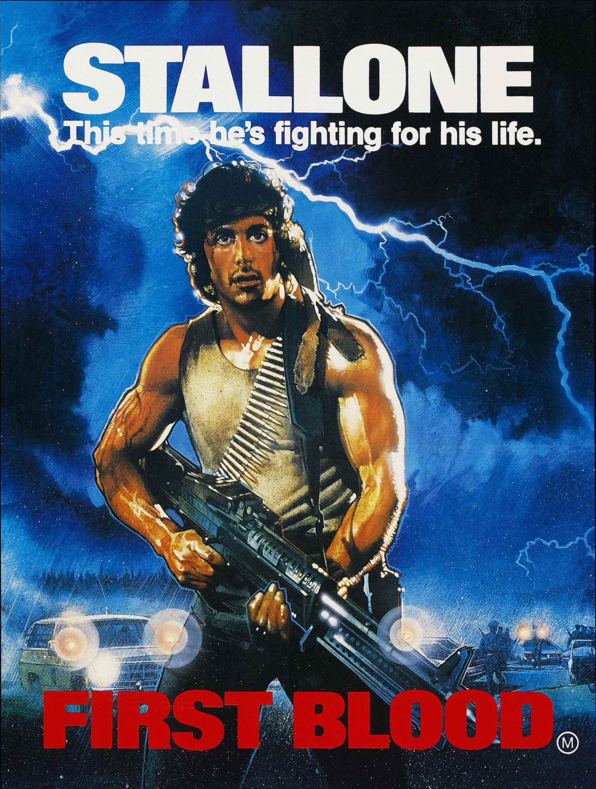

Instalando GNU Emacs
En general utilizo emacs apartir del codigo fuente, no obstante tambien tengo disponible el que brinde la distribucion de turno, ya sea para probar algo o por si alguna version presenta algun comportamiento extraño.
Nunca la he instalado en el sistema emacs compilado a partir del codigo, en su lugar tengo un atajo de teclado para su invocacion
desde repositorios
# en debian
apt-get install emacs
# en fedora
dnf install emacs
compilar desde el codigo fuente
instalamos las dependencias
su
# en debian
apt-get build-dep emacs
# en fedora
dnf builddep emacs
exit
por motivos muy tristes no tengo debian, la ultima ocacion que compile
emacs en debian fue con apt-get build-dep emacs-24, intenta simplemente con
emacs, de lo contrario prueba con emacs-25
(si no tienes git instalalo)
git clone git://git.sv.gnu.org/emacs.git
./autogen.sh
./autogen.sh git
./configure
make
# ya podemos utilizar emacs
./src/emacs
# si deseamos intalarlo
su
make install
exit
configuracion base
tenia mucho tiempo sin “purgar” la configuracion de Emacs, el resultado esta en este zip (33mb). Para utilizarla necesitas:
- descomprimir
- renombrar la carpeta como
.emacs.d - y moverla a home.
Contenido
- init.el # fichero de configuracion de emacs
- nascii-theme.el # tema nascii
- plugins/ # todas las carpetas proceden directamente de git
company-mode # autocompletado
magit # interfaz avanzada git emacs-style
dash.el # dependencia de magit
with-editor # dependencia de magit
emacs-fish # modo para scripts fish
expand-region.el # seleccion segun el contexto
go-mode.el # modo para golang
haskell-mode # modo para haskell
markdown-mode # modo para markdown
multiple-cursors.el # cursores multiples
Emacs posee un magnifico gestor de pagetes, pero soy un romantico e instale
todos los “plugins” directamente de los fuentes, es decir, cada carpeta en
plugins tiene su .git. En teoria esto hara que la configuracion este lista
solo con copiar y pegar. Para ser especifico lo he probado con las versiones
25.1.1 y 26.0.50, ambas en fedora.
Esto tambien significa que los repositorios no estan activados, tendras que hacerlo como antaño: llendo al navegador y averiguado como.
Los modos magit y haskell estan compilados (son los ficheros que
terminan con .elc) y es posible que se genere un error durante la carga aunque
no estoy seguro de ese hecho. Si esto sucede, existen dos soluciones posibles
- elimina la seccion correspondiente a dichos modos dentro de
init.el - o sigue las instrucciones dentro de
init.ely compila los modos
como notas adicionales los atajos estan pensados en la distribucion de teclado
programmer dvorak con 5 teclas modificadas (los dos control, mayus, @ y \)
y el modo go depende de que tengas una instalacion de go. Puedes seguir los dos
pasos anteriores si encuentras algun problema (no olvides revisar la correcta
ubicacion de las rutas en init.el)
programo en haskell? no, pero me hace gracia tener el modo
Iniciando
Una vez Emacs esta en el sistema y ha sido invocado presiona C-h t (Control y
‘h’ a la vez y luego ’t’) esto abre el tutorial… bienvenido a Emacs!
La proxima entrega sera “Emacs - Como crear un tema”… o algo asi.